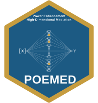

Calibration constants for the real-data-motivated heterogeneous setting
Source:R/data_guo.R
guo_calibration.RdThe fixed constants for the article's real-data-motivated heterogeneous
mediation simulation, calibrated to the DNA-methylation case study of
Guo et al. (2022): a \(p = 1008\)-mediator linear model with eleven active
loci whose effects mix positive and negative signs. simulate_guo_mediation()
generates data from these constants; the object is exported so the exact
calibration is inspectable.
Format
A list with components:
- p, s, n
The mediator count (1008), confounder count (9, an intercept plus eight covariates), and case-study sample size (85).
- locations
Indices of the eleven active mediators.
- alpha_m
Outcome-mediator coefficients at the active loci (the designed simulation values).
- Gamma_x
Exposure-mediator coefficients at the active loci.
- alpha_z
Confounder-outcome coefficients (length 9).
- Gamma_z
Confounder-mediator coefficients at the active loci (an 11 by 9 matrix).
- beta_per_c1
The total indirect effect per unit
c1, equal tosum(Gamma_x * alpha_m)\(\approx -1.597\) (the article reports -1.5977 from the unrounded coefficients).- alpha_m_estimated
The raw Guo et al. (2022) estimate of the outcome-mediator coefficients (for reference; the simulation uses the designed
alpha_m).- alpha_m_variants
Two alternative outcome-mediator coefficient sets the article also studies,
homogeneous_likeandcontrasting_like, which remain heterogeneous when paired withGamma_x.
Source
Transcribed from the supplement of the article (its
parameter-configuration section), which in turn calibrates to the
simulation_allS.Rdata of Guo et al. (2022).
Details
Pairing the exposure-mediator coefficients Gamma_x with the
outcome-mediator coefficients alpha_m gives a total indirect effect of
beta_per_c1 \(\approx -1.597\) per unit of the signal scale \(c_1\).
(The article reports \(-1.5977\), computed from the full-precision Guo
coefficients; the values shipped here are those coefficients rounded to the
three decimals printed in the supplement, which give \(-1.597\).)
References
Guo, X., Li, R., Liu, J., & Zeng, M. (2022). High-dimensional mediation analysis for selecting DNA methylation loci mediating childhood trauma and cortisol stress reactivity. Journal of the American Statistical Association, 117(539), 1110–1121. doi:10.1080/01621459.2022.2053136